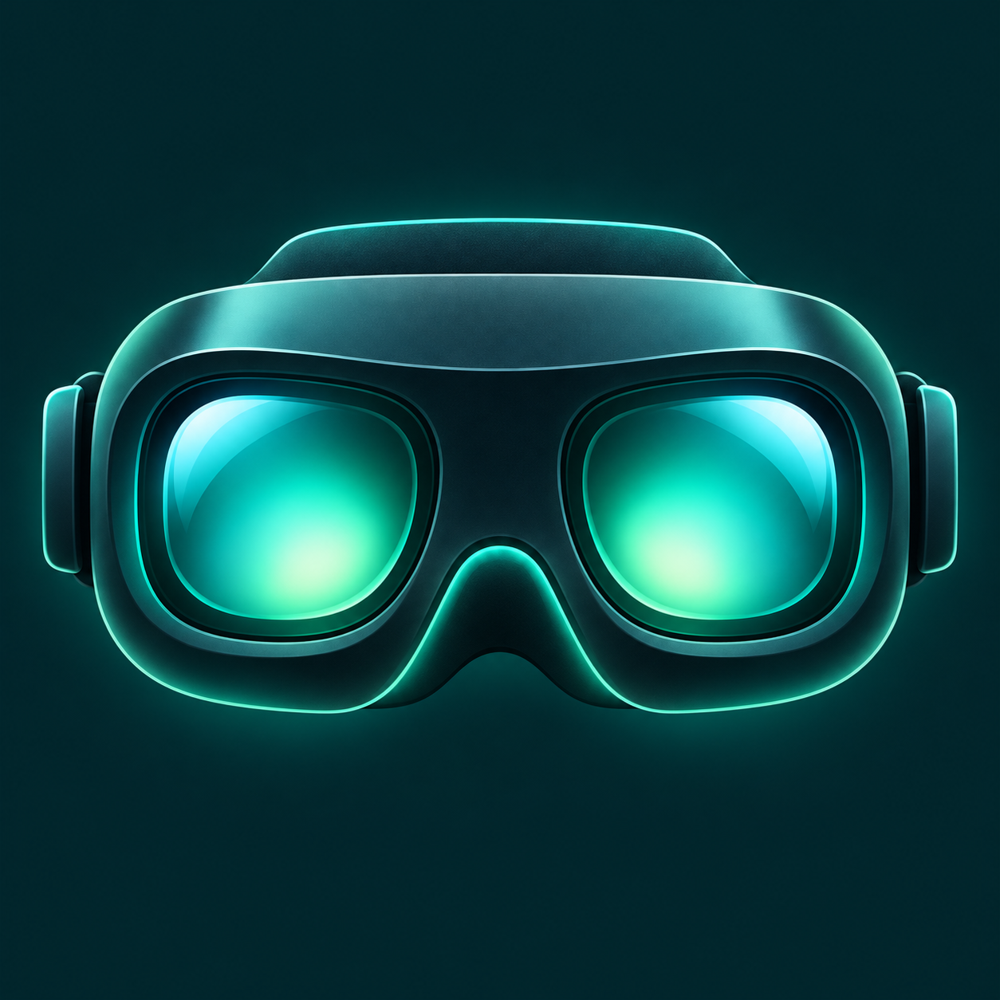
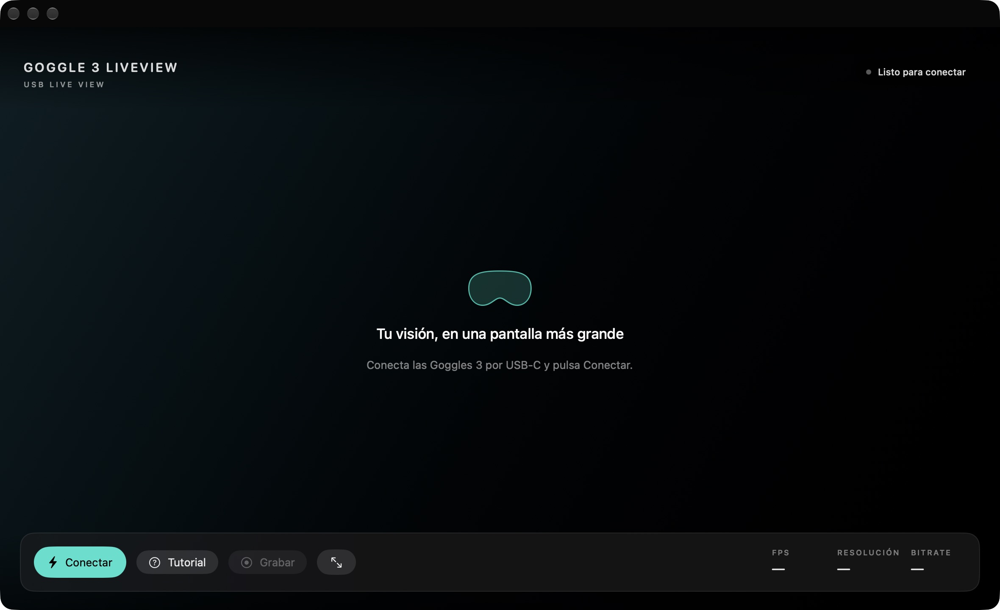
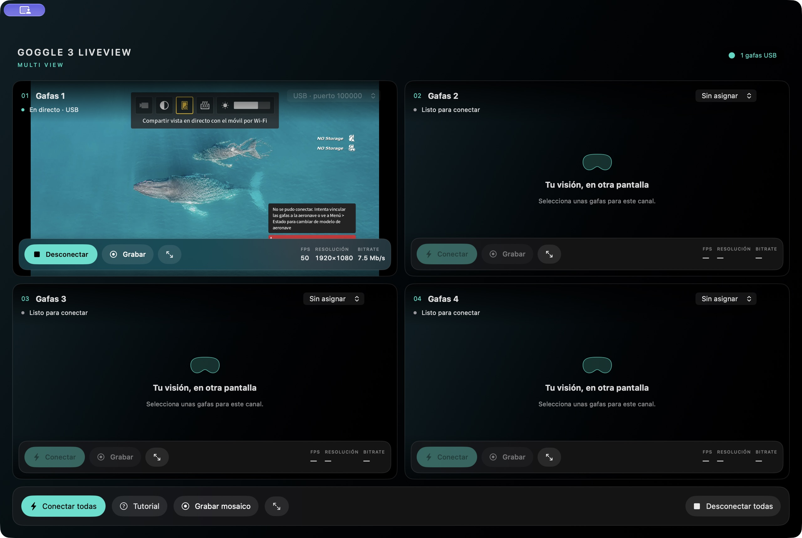
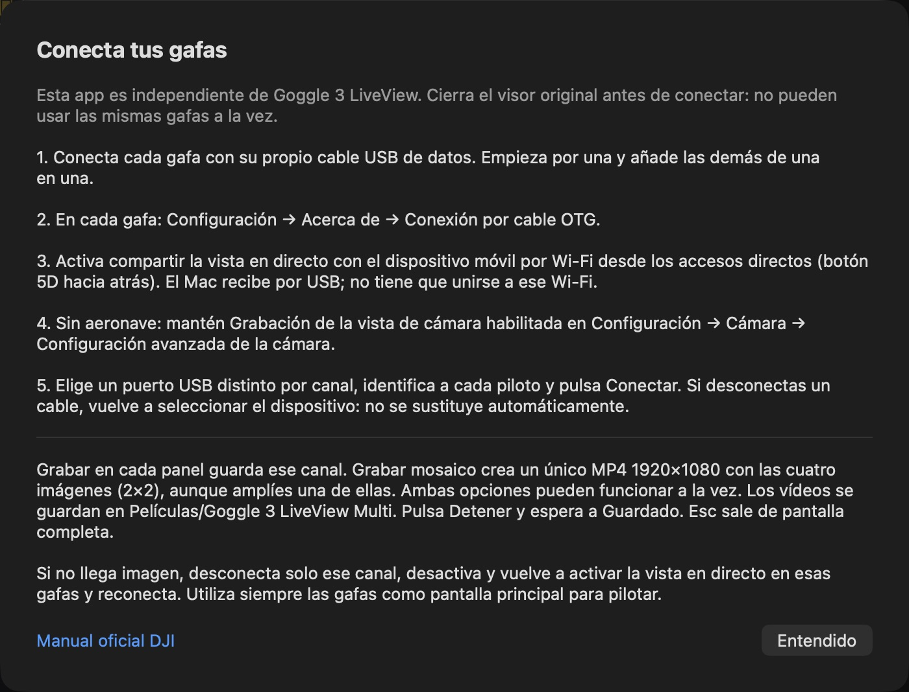

Sin distracciones
El icono junto a Grabar amplía el vídeo y oculta los controles. Pulsa Esc para volver.

Goggle 3 LiveViewPARA DJI GOGGLES 3 · MAC + WINDOWS
Lleva la imagen de tus gafas al ordenador con un cable USB. Compártela en pantalla completa y guarda tus momentos en vídeo.
Sin RC Pro. Sin suscripciones. Código abierto.
¿Quieres varios canales? Conoce la app independiente Multi →
SOLO LO QUE NECESITAS
Un botón para conectar. Otro para grabar.
Y un tutorial siempre a mano.

El icono junto a Grabar amplía el vídeo y oculta los controles. Pulsa Esc para volver.
Graba un MP4 local. Pulsa Detener para finalizarlo y encontrarlo en tu carpeta de vídeos.
Consulta FPS, resolución y bitrate del vídeo recibido por USB, sin abrir otra ventana.
OTRA APP. MÁS ESPACIO PARA TUS GAFAS.
Hasta cuatro canales USB.
Un mosaico, muchas formas de grabar.
Una aplicación independiente para Mac con cuatro espacios de vídeo. Asigna unas gafas a cada panel, identifica a cada piloto y decide si quieres grabar una imagen o el mosaico completo.

Nombre, conexión, FPS, resolución y bitrate por panel.
MP4 individual y grabación global 2×2, incluso a la vez. El mosaico se guarda a 1920×1080 y unos 30 fps, sin botones ni estadísticas.
Pantalla completa por canal o para todo el mosaico. Esc recupera los controles. Ampliar un panel no cambia el vídeo global.
macOS 14 o posterior · chip M1 o posterior.
Actualmente, Multi se distribuye solo para Mac.
LISTA PARA CONECTAR
Abre el DMG y arrastra Goggle 3 LiveView Multi a Aplicaciones. Prepara OTG y la vista compartida en cada gafa siguiendo el tutorial.
Para mover unas gafas a otro panel, pulsa Desconectar y elige Sin asignar en el panel original. Su USB volverá a aparecer entre los disponibles.
Los MP4 se guardan en Películas → Goggle 3 LiveView Multi. Pulsa Detener y espera la confirmación de guardado.
Paquete con firma local, no notarizado por Apple. Consulta la ayuda de primera apertura; no desactives las protecciones globales del Mac.
Leer la guía completa de Multi →
GOGGLE 3 LIVEVIEW · UNA GAFA
App original · Versión 0.3.1 · Mac y Windows. ¿Buscas el mosaico? Descarga Multi para Mac.
Mac con chip M1 o posterior.
macOS 14 o posterior.
La opción para la mayoría de PC.
Windows 11 · 64 bits.
PC con procesador ARM,
como Snapdragon · Windows 11.
Mac: abre el menú Apple → Acerca de este Mac. Si aparece Chip Apple M1, M2, M3 o posterior, elige Mac. No hay paquete para Mac Intel.
Windows: abre Configuración → Sistema → Información. Si Tipo de sistema indica ARM, elige ARM64; si indica x64, elige Intel o AMD.
¿Buscas el código? Ver repositorio MIT · Todos los archivos, fuentes y sumas SHA-256
PRIMERA APERTURA
El paquete no está notarizado por Apple. Si macOS bloquea la primera apertura, verifica su procedencia y consulta la opción individual de apertura en Privacidad y seguridad, según la guía oficial de Apple. No desactives Gatekeeper.
No necesitas instalar .NET ni software de desarrollo. El ejecutable no tiene certificado comercial: si Windows muestra un aviso de editor desconocido, verifica el origen y la suma SHA-256 antes de decidir abrirlo. No desactives el antivirus.
DEL CABLE A LA IMAGEN
Necesitas unas DJI Goggles 3 encendidas
y un cable USB que transmita datos.
Une las gafas al ordenador. Un cable que solo carga no sirve: utiliza un cable de datos y, si hay problemas, prueba sin un hub intermedio.
Dentro de las gafas, abre esta ruta y activa el modo:
Configuración › Acerca de › Conexión por cable OTG
Empuja el botón 5D hacia atrás para abrir los accesos directos. Activa la opción de compartir la vista en directo con el dispositivo móvil por Wi-Fi.
En Windows, la primera vez puede aparecer una solicitud de administrador para preparar el adaptador USB de las gafas. No se cambian tu Wi-Fi, otras redes, DNS ni puerta de enlace.
Nombres de los ajustes: manual oficial DJI Goggles 3, páginas 24 y 28–31. La conexión de esta app por USB y su modo sin aeronave son funciones del proyecto, no una aplicación oficial de DJI.
SI ALGO NO SALE A LA PRIMERA
Las respuestas rápidas, aquí.
La comunidad, en GitHub.
Cierra otras apps que usen las gafas. Si continúa, reconecta el cable de datos. Sin dron, revisa también Grabación de la vista de cámara.
Revisa el cable y OTG. En Administrador de dispositivos debe aparecer el adaptador RNDIS de Microsoft. No lo reemplaces con Zadig o WinUSB. Si aparece un código de error, reconecta el USB y revisa el estado del dispositivo antes de volver a Conectar.
En una máquina virtual, asigna las gafas a Windows desde el menú USB del programa de virtualización. Solo un sistema puede utilizarlas a la vez.
Mac: Películas → Goggle 3 LiveView.
Windows: Vídeos → Goggle 3 LiveView.
Pulsa Grabar para iniciar y Detener para finalizar el MP4. Los vídeos se guardan en el ordenador, sin audio. Las grabaciones anteriores al cambio de nombre permanecen en Goggles3Mac.
No necesitas RC Pro. Puedes mostrar la pantalla de las gafas sin aeronave con los ajustes indicados arriba. Para mostrar la cámara del dron, las gafas sí deben estar recibiendo esa señal.
Pulsa Esc. En Windows también puedes usar F11. Volverán los botones y las estadísticas. El icono de entrada está justo al lado de Grabar.
Es la cantidad de datos de vídeo que recibe la app por USB, expresada en Mbps. No es el bitrate del enlace radio entre el dron y las gafas. La cifra varía y no es un control para aumentar la calidad.
No. El vídeo se recibe desde las gafas y las grabaciones se guardan localmente. La web no incorpora analítica ni rastreadores de terceros; los enlaces de descargas y ayuda llevan a GitHub.
Abre un issue indicando sistema operativo, versión de la app, arquitectura, firmware de las gafas y pasos para reproducirlo. Incluye el mensaje de error, pero elimina números de serie, nombres personales y cualquier dato privado de tus capturas.
HECHO PARA COMPARTIR
Úsalo, estudia el código y ayuda a mejorarlo.
El proyecto es gratuito y se publica con licencia MIT.